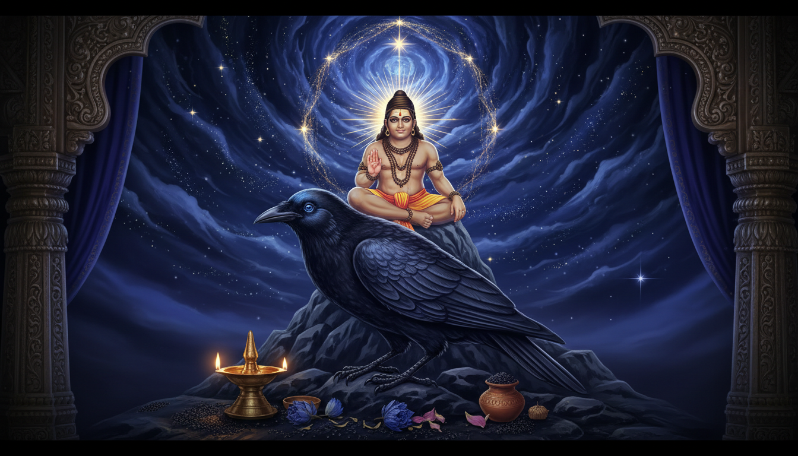

Introduction: Reconnecting with the "Eternal Way"
In our contemporary landscape, many are submerged in a state of chronic exhaustion that the World Health Organization (WHO) formally recognizes as burnout: a syndrome resulting from chronic workplace stress that has not been successfully managed. This exhaustion often manifests as a "great fear"—a paralyzing anxiety regarding the unknown, the future, and our own adequacy. However, long before modern psychology sought to label these states, the ancient sages offered a comprehensive framework for transcendence: Sanatan Dharma.

Translating to the "immemorial way of right living" or the "eternal law," Sanatan Dharma predates specific founders or organizational structures. It is a social and ethical organizing system that aligns the individual with the cosmic order. By synthesizing foundational Vedic knowledge, the psychological insights of the Bhagavad Gita, and the physiological resets of Hatha Yoga, we can navigate the modern "battlefield" with clarity and fearless energy.
The Foundations: Understanding Dharma and Karma
To ground ourselves in this wisdom, we must first understand the architecture of existence through Dharma (righteous living) and Karma (action and consequence).
The Four Forms of Dharma
Dharma is not a singular rule but a four-fold manifestation of order:
- Universal Law: The physical forces and laws of physics regulating nature.
- Social Dharma: The specific occupations, duties, and responsibilities we fulfill within our community.
- Human Law: The natural expression and evolution of the mind, body, feelings, and soul through various life stages.
- Self-Dharma: The unique, individual path and personal representation of one’s journey through existence.
Karma and Sacred Scripture
Sanatan Dharma teaches that Karma—the reality where our words, thoughts, and deeds create our destiny—is inescapable. These truths are anchored in the Shruti ("that which is heard"), consisting of the four Vedas: Rigveda, Samaveda, Yakjurveda, and Atharvaveda. As an expert in Vedic philosophy, it is essential to recognize that each Veda is divided into three distinct parts:
- Mantra: Power-laden sounds and hymns to the divine.
- Brahmanam: Instructions for rituals and their symbolic stories.
- Upanishad: The deep philosophical foundation concerning the nature of Brahman (the Supreme), bondage, and liberation.
Supplementing the Shruti is the Smriti ("that which is remembered"), specifically the Manu Smriti (Human Dharma Shastram), the chief compendium of ethical and social laws for the human race.
Conquering Fear: Insights from the Bhagavad Gita
The Bhagavad Gita identifies the root of all anxiety as "misidentification"—the belief that we are only the temporary body and mind, subject to permanent loss.
- The Root of Fear (Verse 2.11): Lord Krishna begins his teaching to the trembling Arjuna by stating, "You grieve for those who should not be grieved for... The wise grieve neither for the living nor for the dead." Fear exists because we perceive separation and death as final. Wisdom recognizes consciousness as eternal.
- Small Steps (Verse 2.40): Krishna offers a "mathematics of fear" that is non-linear: "In this path, no effort is wasted... Even a little practice of this dharma (sv-alpam apy asya dharmasya) protects one from great fear." A five-minute practice provides a disproportionately large fortress of protection.
- Transforming Attachment (Verse 4.10): Krishna details a psychological chain where attachment creates fear of loss, which leads to anger. By "taking refuge" in the Divine—shifting our identity to the infinite—the fire of knowledge burns away these bindings.
- Divine Friendship (Verse 5.29): We find security when we recognize the Divine as the "friend of all beings." If the foundation of the universe is benevolent, fear has no ground to stand on.
- Sattvic Discernment (Verse 18.30): Wisdom helps us distinguish between Appropriate Fear (caution that prevents spiritual harm) and Paranoid Fear (irrational anxiety that binds the soul).
The Guardians of Justice and Time: Shani Dev and Mahakala
In Vedic tradition, certain deities appear "terrifying" to the ego because they represent the inevitable. However, to the seeker, they are teachers of discipline.
Shani Dev (The God of Karma)
The son of Surya Dev and Goddess Chhaya, Shani Dev is the celestial embodiment of Saturn. Often feared for his "gaze," he is actually the impartial judge of justice. While his brother Yama settles debts in the afterlife, Shani Dev ensures we face our karmic consequences while alive. He teaches that discipline is the path to success and that justice is always impartial.
Mahakala (The God Beyond Time)
Mahakala (Maha = Great, Kala = Time/Death) is the ultimate form of Lord Shiva. In Hindu tradition, he is the supreme, imperishable Brahman; in Buddhism, he is a Dharmapala (Protector) who destroys obstacles to enlightenment.
His iconography is intentionally frightening: he is often depicted with bulging eyes, inflated cheeks, and tusks, seated upon five corpses, and surrounded by vultures and jackals. This imagery reminds us that Time is not bound by anything and shows no mercy to the temporary.
A profound example of his grace is the story of Mārkandēya. When the young devotee was being seized by Yama (Death), Shiva appeared as Mahakala to rescue him, killing Death itself. Thus, Mahakala is the "death of even death." To connect with this protective energy, one may use the mantra: "Hum Hum Mahakalaprasidepraside Hrim Hrim Svaha."
Practical Recovery: Yoga for Burnout
When burnout—characterized by constant fatigue, irritability, and reduced focus—locks the nervous system into "fight-or-flight," we must consciously shift into "rest and restore."
The Burnout Recovery Toolkit
- Restorative Practices:
- Yoga Nidra: "Yogic sleep" provides deep nervous system recovery. Twenty minutes of this guided meditation can provide the equivalent of hours of sleep.
- Viparita Karani (Legs-up-the-Wall): A simple inversion that sends a signal to the brain that the body is safe, lowering the heart rate.
- Pranayama (Breathwork):
- Bhramari (Bee Breath): A gentle humming that soothes the mind.
- Ujjayi (Ocean Breath): A rhythmic breath that anchors awareness.
- Nadi Shodhana (Alternate Nostril Breathing): Balances energy and clears mental fog.
- Gentle Asanas: Moving with awareness through Cat-Cow, Child’s Pose, and Mountain Pose releases physical tension without adding the stress of a high-intensity workout.
Yogic Living "Off the Mat"
To prevent future burnout, we apply three ethical pillars to our daily lives:
- Ahimsa (Non-violence): Interrupting self-criticism and treating our limitations with the compassion we would show a friend.
- Brahmacharya (Balanced Living): Using energy wisely, setting boundaries, and saying "no" to commitments that overstretch our capacity.
- Sattva (Clarity and Calm): Inviting harmony through fresh foods, time in nature, and regular digital detoxes to clear the "static" of modern life.
Conclusion: The Path to Fearless Living
Conquering burnout and fear is not an act of willpower; it is an act of "clear seeing." By aligning our lives with the timeless principles of Sanatan Dharma, we transition from being victims of circumstance to being masters of our own energy.
Remember the ancient promise: sv-alpam apy asya dharmasya trāyate mahato bhayāt—"Even a little practice of this dharma protects one from great fear." By taking small, consistent steps, you build a fortress of peace, secure in the knowledge that the universe is essentially friendly and that you are never truly alone.
Sources
- Shani Jayanti 2026: Date, Muhurat, Significance & Puja ... - Utsav App
- Shani Jayanti 2026 Horoscope: Saturn's Revati transit remedies for all zodiac signs
- Saturn Transit to Revati Nakshatra 2026: Date, Effect, Predictions and Sade Sati Remedies
- The Bhagavad Gita's Answer to Burnout: Work as Worship - JKYog
- Exhaustion vs Burnout: How Ayurveda Helps You Recover and ...
- Saturn Transit in Revati Nakshatra : Your Karmic Report Card is Here
- Upanishadic Antidote to Anxiety - Pragyata
- Shani Dev (Saturn God): The Hindu God of Karma, Justice, Rituals & Beliefs
- Shani Jayanti: The birth of Lord Shani - The Indian Panorama
- Shani Jayanti: Significance, Story, Puja Vidhi, Rituals, and Spiritual Meaning
- Shani Transit 2026: Saturn enters Revati Nakshatra, how it could impact the zodiac signs
- How to Overcame Fear Through the Bhagavad Gita - Radha Krishna Temple of Dallas
- Significance of Shani Jayanti - Eshwar Bhakti
- Shani Dosha Remedies | Shiv Kripa Rudraksha Kendra
- 9 practical remedies believed to lessen the impact of Shani's Sadhe Sati
- Who is Shani Dev in Hindu Mythology? The Complete Story and Significance
- Saturn Transit In Revati 2026–27: Double Pisces Effects for All Signs - dkscore
- How Saturn's Revati transit in 2026 might affect your career | Astrology - Hindustan Times
- Saturn in Revati Nakshatra - Your Predictions and Remedies - align 27
- Embracing Ayurvedic Treatment for Burnout: A Holistic Approach to Well - Cymbiotika
- Shani Jayanti – Hindu Scriptures | Vedic lifestyle, Scriptures, Vedas, Upanishads, Itihaas, Smrutis, Sanskrit.
- Sattvic Lifestyle: Bhagavad Gita Guide to Peace - Radha Krishna Temple of Dallas
- Rajas, Tamas + Burnout — Kari Zabel Health
- Understanding Rajas: Energy & Action in Yoga - James Sanders Yoga
- Yoga For Burnout: How It Helps & Best Practices To Restore Energy
- Healing Mantras for Anxiety and Depression - Art of Living Retreat Center
- Taittiriya Upanishad 7 – Abhayam: Fearlessness | Swami Tattwamayananda
- TAITTIRIYA UPANISAD | 2.7 | AMOETD - SATYAVEDISM
- Relationship between Vedic personality traits (Sattva, Rajas, and Tamas) with life satisfaction and perceived stress in healthy university students: A cross-sectional study - PMC
- Quotes on Fear from Bhagavad Gita - Bhagavad Gita For All
- Exploring Prana: The Divine Essence in Vedic Scriptures - Yoga Natha
- 10 Mantras for Anxiety: Calming the Inner Storm Through Sacred Sound - Big Shakti
- Shani - Wikipedia
- How to change your Karmic destiny - Shanidham
- Prarabdha karma - Wikipedia
- How do you justify the concept of 'prarabdha karma' in Hinduism? - Sanatana Dharma
- Eight Upanishads (Topic-wise) Part 10 - Advaita Vision
- Taittiriya Upanishad 2.7.1 - VivekaVani
- Brihadaranyaka Upanishad (2)
- Dharma-Shastra; (Manusmriti, Naradamrti, Visnusmrti, Yajnavalkya Smriti) - the intact one
- Yājñavalkya Smṛti - Wikipedia
- Vedic Mantras for Meditation & Mental Peace - Pancha Shanthi - YouTube
- Finding Balance And Health With Yoga - Evie Johnson Hair Loss Solutions
- How to overcome fears and phobias Bhagavad Geeta By lord krishna - Prabhupada Servant
- 33. Becoming More Clear & 3 Mind Qualities (Sattvic, Rajasic, Tamasic) – BG, CH2, V44-46
- Shani Remedies to Protect Yourself From Negative Effects of Saturn - The Times of India
- Overcoming Fear: Three Remedies for Fear; What Buddha had to Say About Fearlessness in Abhaya Sutta - Buddha Weekly: Buddhist Practices, Mindfulness, Meditation
- 4 Powerful Mantras to Help You Deal with Fear and Anxiety - Tiny Buddha
- FUNDAMENTAL KNOWLEDGE OF SANATAN VEDIC DHARMA - IJCRT.org
- Prana, the Vital Power - Scriptural Verses from the Upanishads - Siddha Yoga
- The sacred Mahakala in the Hindu and Buddhist texts
- History and Birth Story of Shani Dev - The Times of India
- Saturn Transit in revati ( for revati people) ! : r/Nakshatras - Reddit
- Brihadaranyaka Upanishad – Summary of All 6 Chapters - Vedanta Students
- Notes - The Brihadaranyaka Upanishad - Swami Krishnananda
- Astrologer Suggested an Unconventional' Remedy for Shani antardasha : r/hinduism
- Unique Ways To Overcome Sade Sati And Shani Mahadasha - Rudralife
- Three Kinds of Action - Bhagavad Gita - VivekaVani
- Sattvic Life, Sattvic Mind: Understanding and Applying the Teachings of the Three Gunas - Hridaya Yoga
- The Taittiriya Upanishad - Original Christianity and Original Yoga
- Chapter IX - Who Attains Brahman?
- 108 Chant of a Mantra on Fear | Deva Vasuda - Insight Timer
- Shanti Mantras - Wikipedia
- Full 9th Chapter of Manusmriti
- What is the role of Manu Smriti in Sanatana Dharma? What about other Dharma Shastras? : r/hinduism - Reddit
- Overview of Yajnavalkya Smriti | PDF | Vedas | Sutra - Scribd
- Mahakala Shani hymn - Hindu Online
- Shani, Sā nì, Sà ní, Sāṇi, Sāṇī, Śani, Sani, Śāṇi, Śāṇī, Saṇi, Sanī, Shā ní, Sha ni: 34 definitions - Wisdom Library
- Worshipping Shani Dev a Boon or Bane as Per Holy Scriptures - Jagatgururampalji.org